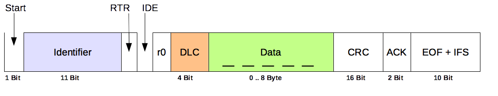
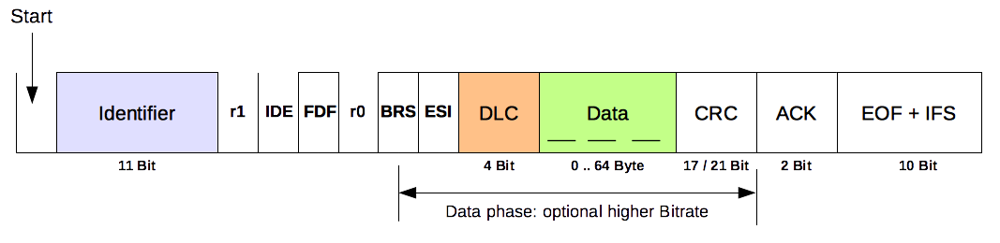

CAN is based on a broadcast communication mechanism implemented with a frame‑oriented transmission protocol. Frames are identified by a frame identifier. The identifier must be unique across the whole network and defines both the frame content and its priority on the bus.
The CAN data link layer comprises two protocols: Classic CAN, introduced in 1986, and CAN FD, introduced in 2012. The protocols are standardised in ISO 11898‑1:2015. Both protocols support base frames (standard identifier, 11-bit CAN-ID) and extended frames (29-bit CAN-ID), leading to four frame formats:
- Classic base frame format (CBFF): frame that contains up to 8 bytes and is identified by 11 bits
- Classic extended frame format (CEFF): frame that contains up to 8 bytes and is identified by 29 bits
- FD base frame format (FBFF): frame that contains up to 64 bytes and is identified by 11 bits
- FD extended frame format (FEFF): frame that contains up to 64 bytes and is identified by 29 bits
The Classic CAN protocol uses one bit rate in the arbitration and data phases. The transmission speed is limited to 1 Mbit/s. The payload (i.e. the data field) is limited to 8 bytes. The following figure shows a Classic CAN frame with an 11-bit CAN-ID.

The CAN FD protocol allows payloads up to 64 bytes. Additionally, it supports an optional second bit rate for the data phase (BRS field). The following figure shows a CAN FD frame with an 11-bit CAN-ID.

Key Concepts
- Dominant and recessive: The physical layer uses differential signalling on CAN_H/CAN_L. A dominant bit (logical 0) overwrites a recessive bit (logical 1), which enables non-destructive arbitration on the bus.
- Arbitration and priority: Frames start with an identifier; the numerically lowest identifier wins arbitration and therefore has the highest priority. All nodes see the same result because of the wired-AND behaviour of the bus.
- Bit stuffing: To keep receivers synchronised, a stuff bit is inserted after five consecutive identical bits and removed by receivers. Stuff errors are detected and reported by all nodes.
- Error detection and fault confinement: CAN provides multiple error checks (bit, stuff, form, CRC, ACK). Nodes maintain transmit/receive error counters and transition between error-active, error-passive, and bus‑off states depending on fault conditions.
- Topology and termination: A linear bus with terminations at both ends (typically 120 Ω) is recommended. Keep stubs short to avoid reflections; achievable bit rate depends on total bus length and topology.
- Layering: ISO 11898‑1 specifies the data link layer (the scope of this introduction). The physical layer is specified in ISO 11898-2 (high-speed) and ISO 11898-3 (fault-tolerant low-speed).
- CAN FD specifics: The bit rate switch (BRS) allows a higher bit rate in the data phase; the error state indicator (ESI) reflects the transmitter’s error status.
Frame Formats
| Format | Identifier | Max payload | Notes |
| Classic base frame (CBFF) | 11-bit | 8 bytes | Single bit rate |
| Classic extended frame (CEFF) | 29-bit | 8 bytes | Single bit rate |
| FD base frame (FBFF) | 11-bit | 64 bytes | Optional higher data-phase bit rate (BRS) |
| FD extended frame (FEFF) | 29-bit | 64 bytes | Optional higher data-phase bit rate (BRS) |